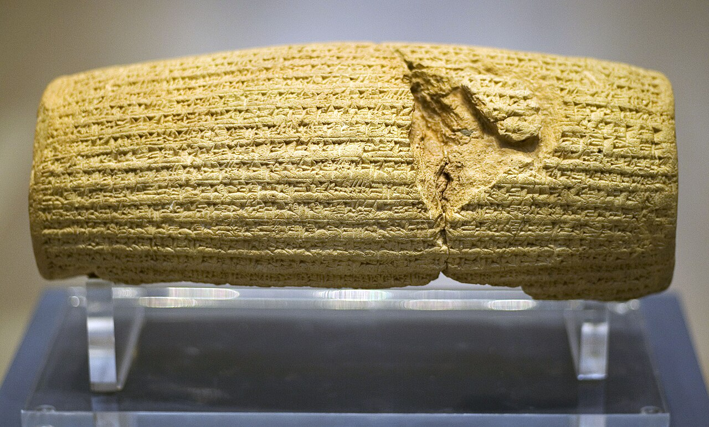

THE CYLINDER
The first universal emperor returns with his own draft of the end of war — written in his own hand, on his own terms.

THE CYLINDER
The first universal emperor returns with his own draft of the end of war — written in his own hand, on his own terms.
Feature map
Level-by-level features, as the figure refined them.
Proclaim
Cost: 2 CE · Bonus action: speak.
Tier IV cursed technique · Suggested CE ability: CHA · Combat role: edict controller / support The technique speaks law. Edicts are proclaimed aloud — in Old Persian first, then in the hearers' tongue (the Cylinder translates itself; witnesses always understand). Every edict has a rule and a fine: the rule binds all within the radius, the fine is Heaven's price for violation — automatic, no save (it is a vow, not an attack). The willing valve is presence: the edict is announced before it takes hold, and any creature that remains within the radius after the announcement consents to the law. Leaving the radius ends the edict's hold on that creature. Edict radius: 30 ft (60 ft at L6, 120 ft at L18). Duration: 1 minute, no concentration.
Speak a minor edict. Choose one: - Edict of Open Gates: allies within the radius gain +10 ft movement (the roads are kept). - Edict of Restoration: allies who regain HP within the radius regain +PB additional HP (the temples are funded). - Edict of Tolerance: creatures within the radius have advantage on saves against charm and fear (no one is compelled in the king's peace). One edict at a time. The edict is announced; all present hear it. The first declaration of rights was a paragraph. Paragraphs, witnessed, are load-bearing.
The Cylinder's Echo
Passive:
Passive: your edicts echo. Edicts last their full minute without concentration. You may maintain two edicts simultaneously (pay each edict's cost). When you speak an edict, you may choose to have it recorded — a clay token, warm to the touch — which a willing ally can later read aloud to re-establish the edict (using your technique save DC) as an action. Tokens last 24 hours; Cyrus may maintain up to PB tokens at once (invented). The Cylinder was copied. Copies, witnessed, hold.
Satrap's Administration
Cost: 3 CE · Action: delegate.
Name one willing ally within 60 ft as your satrap: they may speak and enforce your edicts (using your technique save DC and costs, paid from your CE), and your edict radius becomes 60 ft while the satrapy holds (1 minute). You may have PB satraps at once. An empire is a vow spoken to millions. The satraps are how millions hear it.
The Great Edict
Cost: 7 CE · Action: proclaim the Great Law.
Speak one battlefield-wide edict offering a choice — the choice is the willing valve, and Heaven enforces the chosen branch: - "Let no blood be shed." Any creature that deals damage within the radius pays 3d8 force (Heaven's fine, no save) — or lays down its weapons and takes no hostile action, gaining resistance to all damage while it keeps the peace within the radius. - "Let the wronged be restored." Hostile creatures within the radius have disadvantage on attacks against creatures below half HP (the king's protection extends downward) — or they may spend their action to yield, ending all their hostile conditions (charmed, frightened, and similar, at the GM's discretion) as the edict's mercy takes them. The Great Law is announced in full before it takes hold. Creatures that leave the radius are free of it. The Cylinder freed the captives of Babylon with a paragraph. Paragraphs scale.
Universal Empire
Passive:
Passive: the empire, complete. Your edict radius becomes 120 ft. You may maintain three edicts simultaneously. Your Heaven-fines increase by +PB force damage. Allies who keep your edicts (taking no violating action for the edict's duration) gain +2 to all saving throws while within the radius — the empire protects the law-abiding. From the Aegean to the Indus, one law. The satraps are still reading it.
Maximum, Domain, or equivalent.
Capstone material.
"BABYLON OPENED"
The barrier is Babylon in 539 BCE — the Ishtar Gate blazing blue and gold, the streets orderly, the great doors open (Cyrus took the city without a siege; the priests opened the gates). Sure-hit: the gates open for everyone. Every hostile creature in the Domain is offered the edict, witnessed by Heaven, and must choose: - Submit: bound — cannot attack Cyrus or his allies while within the Domain, but gains resistance to all damage (the protected captive; the Cylinder's mercy is real). - Defy: marked — at initiative 20, Heaven collects from the defiant: 4d10 force damage, no save (they chose; Heaven collects). The choice is the whole Domain. Leaving the Domain ends both conditions. A creature that submits may later choose to defy (and be marked) — the door swings both ways, but Heaven remembers which way you walked. The priests opened the gates. The king did not have to knock. He is still not knocking.
- Clash points
- 800
- Burnout
- 5 rounds
- Duration
- 2 minutes
- Radius
- 60 ft
- Activation ✦
- full-turn action
- CE cost ✦
- 20
✦ Canon: figure Domains are Specific Domains — the stated profile governs, not the player point-unlock table.
The Author of Peace
The new Cylinder (capstone): once per campaign arc, Cyrus may write a permanent edict — a new Cylinder, in clay, in his own hand. Choose one Great Law and inscribe it permanently into a location (a building, a district, a battlefield — GM adjudicates scale): e.g., "No compulsion may be spoken here" (a permanent sanctuary — charm, fear, and command effects fail within; the willing valve: no one is forced to enter), or "The wronged shall be restored" (healing is doubled within; violence pays the fine, forever). The inscription is public, witnessed, and Heaven-enforced. It can only be unmade the way the old Cylinder could be unmade: by breaking the clay — and the world tends to notice when someone breaks Cyrus's clay. He wrote peace first. He intends to write it last.
Build-defining options.
This technique grants Innate Technique Feats — hand-authored applications of the figure's art, available in the builder's feat picker when you select this technique.
Edge cases and shared systems.
Campaign canon notes